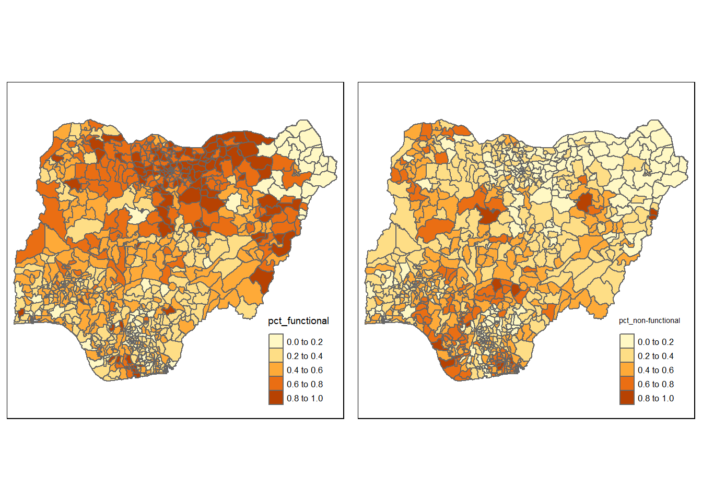

pacman::p_load(sf, tidyverse, tmap, spdep, funModeling)Take-home Exercise 1
1. Overview
1.1 Background
Water is important resource to mankind. Clean and accessible water is critical to human health. As water is finite, various environmental problems and increasing population have intensified water scarcity. According to UN-Water, 1.8 billion people will be living in countries or regions with absolute water scarcity by 2025. Water also poses threats to other factors, such as food security.
Developing countries are more affected by water shortage and poor water quality. In this project, Nigeria, a country in West Africa, will be used as the study country. We are going to apply appropriate global and local measures of spatial Association techniques to reveals the spatial patterns of Not Functional water points.
1.2 Problem Statement
The analysis aims to reveal the spatial patterns of Not Functional water points in Nigeria with following:
Using tidyr and dplyr methods, derive the proportion of functional and non-functional water point at LGA level;
Performing outliers/clusters analysis by using local measures of spatial association methods;
Performing hotspot areas analysis by using local measures of spatial association methods.
1.3 Data
Aspatial data
Data from Water Point Data Exchange(WPdx) in WPdx+, an enhanced version of WPdx-Basic dataset.
Geospatial data
Nigeria Level-2 Administrative Boundary(local government area), which can be downloaded from https://data.humdata.org/dataset/cod-ab-nga.
1.4 R package
The packages will be used for this analysis:
sf: used for importing, managing and processing geospatial data
tidyverse: a set of packages for data science
tmap: used to generate thematic maps
spdep: used to create spatial weights matrix objects
funModeling: used for rapid Exploratory Data Analysis
The code chunk below is used for load related packages into R environment.
2. Data Wrangling
Following two datasets are used:
| File Name | Data Type |
|---|---|
| geo_export | aspatial data |
| nga_admbnda_adm2_osgof_20190417 | geospatial data |
2.1 Importing Water Point Data
wp <- st_read(dsn="geodata",
layer="geo_export",
crs=4326) %>%
filter(clean_coun == "Nigeria")write_rds is used to save the extracted sf data table into an output file in rds data format.
wp_nga <- write_rds(wp,
"geodata/wp_nga.rds")2.2 Importing Nigeria LGA Boundary data
nga <- st_read(dsn="geodata",layer="nga_admbnda_adm2_osgof_20190417",
crs=4326)2.3 Data Processing
2.3.1 Recode NA value into Unknown
wp_nga <- read_rds("geodata/wp_nga.rds") %>%
mutate(status_cle = replace_na(status_cle, "Unknown"))2.4 Explanatory Data Analysis
The code chunk below is used to display the distribution of status_cle.
freq (data=wp_nga,input = "status_cle")
Above figure shows that there are 9 kinds of status. For the convenience of analysis, we are going to define three categories for water points: “Functional”, “Non-Functional” and ” Unknown”. “Functional”, “Functional but needs repair”, “Functional but not in use” will be categorized to “Functional” while “Non-Functional”, “Non-Functional due to dry season”, “Non functional due to dry season”, “Abandoned”, “Abandoned/Decommissioned” will be categorized to “Non-Functional”.
2.5 Extract Water Points(Functional, Non-Functional and Unknown)
The code chunk below is used to extract functional, non-functional and unknown water points respectively.
wpt_functional <- wp_nga %>%
filter(status_cle %in%
c("Functional",
"Functional but not in use",
"Functional but needs repair"))
freq(data=wpt_functional, input="status_cle")wpt_nonfunctional <- wp_nga %>%
filter(status_cle %in%
c("Abandoned/Decommissioned",
"Abandoned",
"Non-Functional",
"Non functional due to dry season",
"Non-Functional due to dry season"))
freq(data=wpt_nonfunctional,input = 'status_cle')wpt_unknown <- wp_nga %>%
filter(status_cle == "Unknown")2.6 Performing Point-in-Polygon Count
The code chunk below is used to calculate numbers of each category water points in Nigeria.
nga_wp <- nga %>%
mutate(`total wpt` = lengths(
st_intersects(nga, wp_nga))) %>%
mutate(`wpt functional` = lengths(
st_intersects(nga, wpt_functional))) %>%
mutate(`wpt non-functional` = lengths(
st_intersects(nga, wpt_nonfunctional))) %>%
mutate(`wpt unknown` = lengths(
st_intersects(nga, wpt_unknown)))2.7 Saving the analytical data table
The code chunk below is used to derive two columns named pct_functional and pct_non-functional to show percentage of each category water point in Nigeria. And to keep the file size small, select of dplyr is used to retain field 3,4,9,10,18,19,20,21,22 and 23.
nga_wp <- nga_wp %>%
mutate(pct_functional = `wpt functional`/`total wpt`) %>%
mutate(`pct_non-functional` = `wpt non-functional`/`total wpt`) %>%
select(3:4, 9:10, 18:23)Now the tidy version of sf data table is attainable, we can save it into rds format.
write_rds(nga_wp, "geodata/nga_wp.rds")The code chunk below is used to read the rds file into R environment.
nga_wp <- read_rds("geodata/nga_wp.rds")Before conducting the analysis, we can have a glimpse of our data table by using following code chunk.
glimpse(nga_wp)Rows: 774
Columns: 11
$ ADM2_EN <chr> "Aba North", "Aba South", "Abadam", "Abaji", "Aba…
$ ADM2_PCODE <chr> "NG001001", "NG001002", "NG008001", "NG015001", "…
$ ADM1_PCODE <chr> "NG001", "NG001", "NG008", "NG015", "NG003", "NG0…
$ ADM0_EN <chr> "Nigeria", "Nigeria", "Nigeria", "Nigeria", "Nige…
$ `total wpt` <int> 17, 71, 0, 57, 48, 233, 34, 119, 152, 66, 39, 135…
$ `wpt functional` <int> 7, 29, 0, 23, 23, 82, 16, 72, 79, 18, 25, 54, 28,…
$ `wpt non-functional` <int> 9, 35, 0, 34, 25, 42, 15, 33, 62, 26, 13, 73, 35,…
$ `wpt unknown` <int> 1, 7, 0, 0, 0, 109, 3, 14, 11, 22, 1, 8, 0, 37, 8…
$ pct_functional <dbl> 0.4117647, 0.4084507, NaN, 0.4035088, 0.4791667, …
$ `pct_non-functional` <dbl> 0.52941176, 0.49295775, NaN, 0.59649123, 0.520833…
$ geometry <MULTIPOLYGON [°]> MULTIPOLYGON (((7.401109 5...., MULT…There are 774 local government areas with 11 columns.
2.8 Working with Projection
The code chunk below is used to check the coordinate reference system.
st_crs(nga_wp)Coordinate Reference System:
User input: EPSG:4326
wkt:
GEOGCRS["WGS 84",
DATUM["World Geodetic System 1984",
ELLIPSOID["WGS 84",6378137,298.257223563,
LENGTHUNIT["metre",1]]],
PRIMEM["Greenwich",0,
ANGLEUNIT["degree",0.0174532925199433]],
CS[ellipsoidal,2],
AXIS["geodetic latitude (Lat)",north,
ORDER[1],
ANGLEUNIT["degree",0.0174532925199433]],
AXIS["geodetic longitude (Lon)",east,
ORDER[2],
ANGLEUNIT["degree",0.0174532925199433]],
USAGE[
SCOPE["Horizontal component of 3D system."],
AREA["World."],
BBOX[-90,-180,90,180]],
ID["EPSG",4326]]The CRS is WGS 84, EPSG 4326. Because our study country is Nigeria, so the Projected Coordinate System should be changed to one of following EPSG: 26391, 26392, and 26303. The code chunk below is used to change EPSG to 26391 and check.
nga_wp<- st_transform(nga_wp, 26391)
st_crs(nga_wp)Coordinate Reference System:
User input: EPSG:26391
wkt:
PROJCRS["Minna / Nigeria West Belt",
BASEGEOGCRS["Minna",
DATUM["Minna",
ELLIPSOID["Clarke 1880 (RGS)",6378249.145,293.465,
LENGTHUNIT["metre",1]]],
PRIMEM["Greenwich",0,
ANGLEUNIT["degree",0.0174532925199433]],
ID["EPSG",4263]],
CONVERSION["Nigeria West Belt",
METHOD["Transverse Mercator",
ID["EPSG",9807]],
PARAMETER["Latitude of natural origin",4,
ANGLEUNIT["degree",0.0174532925199433],
ID["EPSG",8801]],
PARAMETER["Longitude of natural origin",4.5,
ANGLEUNIT["degree",0.0174532925199433],
ID["EPSG",8802]],
PARAMETER["Scale factor at natural origin",0.99975,
SCALEUNIT["unity",1],
ID["EPSG",8805]],
PARAMETER["False easting",230738.26,
LENGTHUNIT["metre",1],
ID["EPSG",8806]],
PARAMETER["False northing",0,
LENGTHUNIT["metre",1],
ID["EPSG",8807]]],
CS[Cartesian,2],
AXIS["(E)",east,
ORDER[1],
LENGTHUNIT["metre",1]],
AXIS["(N)",north,
ORDER[2],
LENGTHUNIT["metre",1]],
USAGE[
SCOPE["Engineering survey, topographic mapping."],
AREA["Nigeria - onshore west of 6°30'E, onshore and offshore shelf."],
BBOX[3.57,2.69,13.9,6.5]],
ID["EPSG",26391]]3. Mapping: Functional and Non-funtional water point rate
The code chunk below is used to display the spatial distribution of the number of each category water points.
tm_shape(nga_wp)+
tm_polygons(c("total wpt","wpt functional","wpt non-functional","wpt unknown")) +
tm_layout(legend.width=0.2,
legend.height=0.3,
legend.position=c("right","bottom"))Apart from the number, the distribution of functional and non-functional water point rate at LGA level is going to be plotted below.
tm_shape(nga_wp)+
tm_polygons(c("pct_functional","pct_non-functional")) +
tm_layout(legend.width=0.2,
legend.height=0.3,
legend.position=c("right","bottom"))
Observations from above choropleth maps:
- Functional water points mainly located in the north and east of Nigeria.
- There are some missing values in the northeast part of Nigeria.
- The distribution of non-functional water points seems to have certain spatial autocorrelation(will test in the following chapter).
Dealing with the missing data
The code chunk below is used to show the rows have missing data for colomn “pct_non-functional”.
which(is.na(nga_wp$`pct_non-functional`)) [1] 3 86 241 250 252 261 400 406 447 473 492 507 526There are 13 columns that do not have the percentage value. Because the numbers of their total water points are 0, and respective percentage shows as NaN. The code chunk below is used to fill NaN with 0.
nga_wp$`pct_non-functional`[is.na(nga_wp$`pct_non-functional`)] = 0
nga_wp$`pct_functional`[is.na(nga_wp$`pct_functional`)] = 0Let’s check the choropleth map again.
pct_functional <- tm_shape(nga_wp)+
tm_polygons("pct_functional") +
tm_layout(legend.width=0.2,
legend.height=0.3,
legend.position=c("right","bottom"))
pct_nonfunctional <- tm_shape(nga_wp)+
tm_polygons("pct_non-functional") +
tm_layout(legend.width=0.2,
legend.height=0.3,
legend.position=c("right","bottom"))
tmap_arrange(pct_functional, pct_nonfunctional, asp=1, ncol=2)
The missing data have been changed to 0.
4. Computing Contiguity Spatial Weights
Before computing the global spatial autocorrelation statistics, it is necessary to construct a spatial weights. The spatial weights is used to define the neighbourhood relationships between the local government areas in Nigeria.
4.1 Selecting the spatial weighing method
First of all, we need to select an appropriate spatial weighing method to calculate the spatial weight matrix.
Polygon Contiguity Method
The polygon contiguity method is effective when polygons are similar in size and distribution, and when spatial relationships are a function of polygon proximity (the idea that if two polygons share a boundary, spatial interaction between them increases).
The code chunk below is used to show the boundary line of LGA in Nigeria.
nigeria_lga <- tm_shape(nga_wp) +
tm_polygons()
nigeria_lga
The size and distribution of LGA in Nigeria is not similar. Some LGAs are more dense and have shorter boundary.
Distance-based neighbours
To use distance-based method, the first step is to get the centroid of each polygon by running st_centroid on the sf package.
coords <- st_centroid(st_geometry(nga_wp))k1 <- knn2nb(knearneigh(coords))
k1dists <- unlist(nbdists(k1, coords, longlat = TRUE))
summary(k1dists) Min. 1st Qu. Median Mean 3rd Qu. Max.
2669 12834 20304 22084 27783 72139 The summary report shows that the largest first-nearest neighbour distance is 72139 m, which will be used as the upper threshold in order to make sure all LGA will have at least one neighbour.
Computing fixed distance weight matrix
The fixed distance method often is a good option for polygon data when there is a large variation in polygon size.
upper_threshold <- 73000
wm_d <- dnearneigh(coords, 0, upper_threshold, longlat = TRUE)
wm_dNeighbour list object:
Number of regions: 774
Number of nonzero links: 18486
Percentage nonzero weights: 3.085752
Average number of links: 23.88372 The report shows that the average number of links for each region is 23.88, which may be skewed for the analysis.
Computing adaptive distance weight matrix
Adaptive distance can adjust itself according to the density of data. K-nearest neighbours can be used to control the numbers of neighbours directly. The numbers of neighbours can be assigned to the argument of knearhneigh() and the neighbours can be designated based on the distance between centroids.
The code chunk below is used to control the numbers of neighbours at 8.
knn8 <- knn2nb(knearneigh(coords, k=8))
knn8Neighbour list object:
Number of regions: 774
Number of nonzero links: 6192
Percentage nonzero weights: 1.033592
Average number of links: 8
Non-symmetric neighbours listThe code chunk below is used to plot the adaptive distance based neighbours.
plot(nga_wp$geometry, border="lightgrey")
plot(knn8, coords, pch = 19, cex = 0.6, add = TRUE, col = "red")
K-nearest neighbours method is chosen as the spatial weighting method.
4.2 Row-standardised weight matrix
Next, we need to assign weights to each neighbouring polygon. In our case, each neighbouring will be assigned equal weight(Style “W”).
rsknn8 <- nb2listw(knn8,
style="W",
zero.policy = TRUE)
rsknn8Characteristics of weights list object:
Neighbour list object:
Number of regions: 774
Number of nonzero links: 6192
Percentage nonzero weights: 1.033592
Average number of links: 8
Non-symmetric neighbours list
Weights style: W
Weights constants summary:
n nn S0 S1 S2
W 774 599076 774 174.2812 3155.3125. Global Spatial Autocorrelation: Moran’s I
5.1 Moran’s I Test
Null Hypothesis: The percentage of non-functional water points is randomly distributed in Nigeria.
Alternative Hypothesis: The percentage of non-functional water points has space autocorrelation in Nigeria.
The code chunk below performs Moran’s I statistical testing using moran.test() of spdep.
moran.test(nga_wp$`pct_non-functional`,
listw=rsknn8,
zero.policy = TRUE,
na.action=na.omit)
Moran I test under randomisation
data: nga_wp$`pct_non-functional`
weights: rsknn8
Moran I statistic standard deviate = 27.282, p-value < 2.2e-16
alternative hypothesis: greater
sample estimates:
Moran I statistic Expectation Variance
0.4613882839 -0.0012936611 0.0002876085 The p-value is much smaller than alpha value at 0.05, so we have statistical evidence to reject the null hypothesis. The Moran’s I value is 0.461388, larger than 0, indicating that the spatial distribution of high values or low values in the dataset is more spatially clustered.
5.1.1 Computing Monte Carlo Moran’s I
We can do a permutation test to evaluate the rank of the observed statistic in relation to the statistic of simulated values.
The code chunk below performs permutation test for Moran’s I statistic by using moran.mc() of spdep. A total of 1000 simulation will be performed.
set.seed(1234)
bperm= moran.mc(nga_wp$`pct_non-functional`,
listw=rsknn8,
nsim=999,
zero.policy = TRUE,
na.action=na.omit)
bperm
Monte-Carlo simulation of Moran I
data: nga_wp$`pct_non-functional`
weights: rsknn8
number of simulations + 1: 1000
statistic = 0.46139, observed rank = 1000, p-value = 0.001
alternative hypothesis: greater5.1.2 Visualising Monte Carlo Moran’s I
The code chunk below is used to plot the distribution of Monte Carlo test result.
ggplot(mapping = aes(bperm$res))+
geom_density(color="black",
fill="light blue") +
geom_vline(xintercept = 0.461388) labs(x = "Simulated Moran's I",
y = "Frequency")$x
[1] "Simulated Moran's I"
$y
[1] "Frequency"
attr(,"class")
[1] "labels"5.2 Computing Moran’s I correlogram
In the code chunk below, sp.correlogram() of spdep package is used to compute a 8-lag spatial correlogram of percentage of non functional water points. The global spatial autocorrelation used in Moran’s I. The plot() of base Graph is then used to plot the output.
MI_corr <- sp.correlogram(knn8,
nga_wp$`pct_non-functional`,
order=8,
method="I",
style="W")
plot(MI_corr)6. Cluster and Outlier Analysis
Local Indicators of Spatial Association or LISA are statistics that evaluate the existence of clusters in the spatial arrangement of a given variable. Local Moran’s I will be used to detect cluster and outlier from percentage of non-functional water point across Nigeria.
6.1 Computing local Moran’s I
To compute local Moran’s I, the localmoran() function of spdep will be used. It computes Ii values, given a set of zi values and a listw object providing neighbour weighting information for the polygon associated with the zi values.
The code chunk below is used to compute local Moran’s I of pct_non-functional water point at the LGA level.
fips1 <- order(nga_wp$`pct_non-functional`)
localMI <- localmoran(nga_wp$`pct_non-functional`, rsknn8)
head(localMI) Ii E.Ii Var.Ii Z.Ii Pr(z != E(Ii))
1 0.6758946 -0.0008481017 0.08124087 2.374304 1.758207e-02
2 0.6206028 -0.0005236472 0.05017720 2.772853 5.556728e-03
3 2.9220515 -0.0037801442 0.36104279 4.869339 1.119723e-06
4 0.2169765 -0.0016485516 0.15779059 0.550376 5.820615e-01
5 0.8924913 -0.0007647464 0.07326225 3.300166 9.662752e-04
6 0.5741337 -0.0009383859 0.08988120 1.918173 5.508904e-026.1.1 Mapping local Moran’s I values
Before mapping, it is wise to append the local Moran’s I dataframe onto Nigeria Water Point dataframe. The new data frame is called nga_wp.localMI.
nga_wp.localMI <- cbind(nga_wp,localMI) %>%
rename(Pr.Ii = Pr.z....E.Ii..)The code chunk below is used to plot the local Moran’s I values.
localMI.map <- tm_shape(nga_wp.localMI) +
tm_fill(col = "Ii",
style = "pretty",
palette = "RdBu",
title = "local moran statistics") +
tm_layout(legend.width=0.2,
legend.height=0.3,
legend.position=c("right","bottom")) +
tm_borders(alpha = 0.5)
localMI.map
6.1.2 Mapping local Moran’s I p-values
Above choropleth shows the positive and negative values. Ans we can plot Moran’s I p-values as well.
pvalue.map <- tm_shape(nga_wp.localMI) +
tm_fill(col = "Pr.Ii",
breaks=c(-Inf, 0.001, 0.01, 0.05, 0.1, Inf),
palette="-Blues",
title = "local Moran's I p-values") +
tm_layout(legend.width=0.2,
legend.height=0.3,
legend.position=c("right","bottom")) +
tm_borders(alpha = 0.5)
pvalue.map
6.1.3 Mapping both local Moran’s I values and p-values
tmap_arrange(localMI.map, pvalue.map, asp=1, ncol=2)6.2 Creating a LISA Cluster Map
The LISA Cluster Map shows the significant locations color coded by types of spatial autocorrelation. The first step before we generate the LISA Cluster Map is to plot the Moran Scatterplot.
6.2.1 Plotting Moran Scatterplot
The scatterplot shows the relationship between the chosen attribute (“pct of non-functional water points” in our case) at each location and the average value of the same attribute at neighbouring locations.
The code chunk below is used to plot the Moran Scatterplot.
nci <- moran.plot(nga_wp$`pct_non-functional`, rsknn8,
labels=as.character(nga_wp$ADM2_EN),
xlab="Percentage of non-functional Water Points",
ylab="Spatially Lag Percentage of non-functional WPs")The plot is split in 4 quadrants. The top right corner belongs to areas that have high percentage of non-functional water points.
6.2.2 Plotting Moran Scatterplot with standardised variable
Firstly, we use scale() to centers and scales the variable.
nga_wp$Z.pct_nonfunctional <- scale(nga_wp$`pct_non-functional`) %>%
as.vector Then we use code chunk below to plot again.
nci2 <- moran.plot(nga_wp$Z.pct_nonfunctional, rsknn8,
labels=as.character(nga_wp$ADM2_EN),
xlab="z-Percentage of non-functional Water Points",
ylab="Spatially Lag Percentage of non-functional WPs")6.2.3 Preparing LISA map classes
quadrant <- vector(mode="numeric",length=nrow(localMI))Then, derive the spatially lagged variable of interest (i.e. Percentage of non-functional Water Points) and centers tha spatially lagged variable around its mean.
nga_wp$lag_pctnonfuncional <- lag.listw(rsknn8, nga_wp$`pct_non-functional`)
DV <- nga_wp$lag_pctnonfuncional - mean(nga_wp$lag_pctnonfuncional) Then centering the local Moran’s around the mean.
LM_I <- localMI[,1] - mean(localMI[,1]) We set the significance level at 0.05.
signif <- 0.05 The code chunk below is used to define four quadrants: low-low (1), low-high (2), high-low (3) and high-high (4).
quadrant[DV <0 & LM_I>0] <- 1
quadrant[DV >0 & LM_I<0] <- 2
quadrant[DV <0 & LM_I<0] <- 3
quadrant[DV >0 & LM_I>0] <- 4 And place non-significant Moran in category 0.
quadrant[localMI[,5]>signif] <- 06.2.4 Plotting LISA Map
The code chunk below is used to plot the LISA Map.
nga_wp.localMI$quadrant <- quadrant
colors <- c("#ffffff", "#2c7bb6", "#abd9e9", "#fdae61", "#d7191c")
clusters <- c("insignificant", "low-low", "low-high", "high-low", "high-high")
LISAMap <- tm_shape(nga_wp.localMI) +
tm_fill(col = "quadrant",
style = "cat",
palette = colors[c(sort(unique(quadrant)))+1],
labels = clusters[c(sort(unique(quadrant)))+1],
popup.vars = c("")) +
tm_view(set.zoom.limits = c(11,17)) +
tm_borders(alpha=0.5)
LISAMapFor better visualisation, the code chunk below is used to plot local Moran’s I values and insterested attribute together.
tmap_arrange(pct_nonfunctional, LISAMap, asp=1, ncol=2)The code chunk below is used plot the local Moran’s I map and p-value map together.
tmap_arrange(localMI.map, pvalue.map, asp=1, ncol=2)
6.3 Hot Spot and Cold Spot Area Analysis
“Hot Spot” refers to a region or value that is higher relative to its surroundings.
6.3.1 Getis and Ord’s G-statistics
G-statistics is an alternative spatial statistics to detect spatial anomalies. It looks at neighbours within a defined proximity to identify either high or low values cluster spatially.
There are three steps to do:
Deriving spatial weight matrix
Computing G-statistics
Mapping G-statistics
6.3.1.1 Computing adaptive distance weight matrix
As we chose k-nearest neighbour methos as the spatial weighting method in Chapter 4.1.
Now we convert it into spatial weights object.
knn_lw <- nb2listw(knn8, style = 'B')
summary(knn_lw)Characteristics of weights list object:
Neighbour list object:
Number of regions: 774
Number of nonzero links: 6192
Percentage nonzero weights: 1.033592
Average number of links: 8
Non-symmetric neighbours list
Link number distribution:
8
774
774 least connected regions:
1 2 3 4 5 6 7 8 9 10 11 12 13 14 15 16 17 18 19 20 21 22 23 24 25 26 27 28 29 30 31 32 33 34 35 36 37 38 39 40 41 42 43 44 45 46 47 48 49 50 51 52 53 54 55 56 57 58 59 60 61 62 63 64 65 66 67 68 69 70 71 72 73 74 75 76 77 78 79 80 81 82 83 84 85 86 87 88 89 90 91 92 93 94 95 96 97 98 99 100 101 102 103 104 105 106 107 108 109 110 111 112 113 114 115 116 117 118 119 120 121 122 123 124 125 126 127 128 129 130 131 132 133 134 135 136 137 138 139 140 141 142 143 144 145 146 147 148 149 150 151 152 153 154 155 156 157 158 159 160 161 162 163 164 165 166 167 168 169 170 171 172 173 174 175 176 177 178 179 180 181 182 183 184 185 186 187 188 189 190 191 192 193 194 195 196 197 198 199 200 201 202 203 204 205 206 207 208 209 210 211 212 213 214 215 216 217 218 219 220 221 222 223 224 225 226 227 228 229 230 231 232 233 234 235 236 237 238 239 240 241 242 243 244 245 246 247 248 249 250 251 252 253 254 255 256 257 258 259 260 261 262 263 264 265 266 267 268 269 270 271 272 273 274 275 276 277 278 279 280 281 282 283 284 285 286 287 288 289 290 291 292 293 294 295 296 297 298 299 300 301 302 303 304 305 306 307 308 309 310 311 312 313 314 315 316 317 318 319 320 321 322 323 324 325 326 327 328 329 330 331 332 333 334 335 336 337 338 339 340 341 342 343 344 345 346 347 348 349 350 351 352 353 354 355 356 357 358 359 360 361 362 363 364 365 366 367 368 369 370 371 372 373 374 375 376 377 378 379 380 381 382 383 384 385 386 387 388 389 390 391 392 393 394 395 396 397 398 399 400 401 402 403 404 405 406 407 408 409 410 411 412 413 414 415 416 417 418 419 420 421 422 423 424 425 426 427 428 429 430 431 432 433 434 435 436 437 438 439 440 441 442 443 444 445 446 447 448 449 450 451 452 453 454 455 456 457 458 459 460 461 462 463 464 465 466 467 468 469 470 471 472 473 474 475 476 477 478 479 480 481 482 483 484 485 486 487 488 489 490 491 492 493 494 495 496 497 498 499 500 501 502 503 504 505 506 507 508 509 510 511 512 513 514 515 516 517 518 519 520 521 522 523 524 525 526 527 528 529 530 531 532 533 534 535 536 537 538 539 540 541 542 543 544 545 546 547 548 549 550 551 552 553 554 555 556 557 558 559 560 561 562 563 564 565 566 567 568 569 570 571 572 573 574 575 576 577 578 579 580 581 582 583 584 585 586 587 588 589 590 591 592 593 594 595 596 597 598 599 600 601 602 603 604 605 606 607 608 609 610 611 612 613 614 615 616 617 618 619 620 621 622 623 624 625 626 627 628 629 630 631 632 633 634 635 636 637 638 639 640 641 642 643 644 645 646 647 648 649 650 651 652 653 654 655 656 657 658 659 660 661 662 663 664 665 666 667 668 669 670 671 672 673 674 675 676 677 678 679 680 681 682 683 684 685 686 687 688 689 690 691 692 693 694 695 696 697 698 699 700 701 702 703 704 705 706 707 708 709 710 711 712 713 714 715 716 717 718 719 720 721 722 723 724 725 726 727 728 729 730 731 732 733 734 735 736 737 738 739 740 741 742 743 744 745 746 747 748 749 750 751 752 753 754 755 756 757 758 759 760 761 762 763 764 765 766 767 768 769 770 771 772 773 774 with 8 links
774 most connected regions:
1 2 3 4 5 6 7 8 9 10 11 12 13 14 15 16 17 18 19 20 21 22 23 24 25 26 27 28 29 30 31 32 33 34 35 36 37 38 39 40 41 42 43 44 45 46 47 48 49 50 51 52 53 54 55 56 57 58 59 60 61 62 63 64 65 66 67 68 69 70 71 72 73 74 75 76 77 78 79 80 81 82 83 84 85 86 87 88 89 90 91 92 93 94 95 96 97 98 99 100 101 102 103 104 105 106 107 108 109 110 111 112 113 114 115 116 117 118 119 120 121 122 123 124 125 126 127 128 129 130 131 132 133 134 135 136 137 138 139 140 141 142 143 144 145 146 147 148 149 150 151 152 153 154 155 156 157 158 159 160 161 162 163 164 165 166 167 168 169 170 171 172 173 174 175 176 177 178 179 180 181 182 183 184 185 186 187 188 189 190 191 192 193 194 195 196 197 198 199 200 201 202 203 204 205 206 207 208 209 210 211 212 213 214 215 216 217 218 219 220 221 222 223 224 225 226 227 228 229 230 231 232 233 234 235 236 237 238 239 240 241 242 243 244 245 246 247 248 249 250 251 252 253 254 255 256 257 258 259 260 261 262 263 264 265 266 267 268 269 270 271 272 273 274 275 276 277 278 279 280 281 282 283 284 285 286 287 288 289 290 291 292 293 294 295 296 297 298 299 300 301 302 303 304 305 306 307 308 309 310 311 312 313 314 315 316 317 318 319 320 321 322 323 324 325 326 327 328 329 330 331 332 333 334 335 336 337 338 339 340 341 342 343 344 345 346 347 348 349 350 351 352 353 354 355 356 357 358 359 360 361 362 363 364 365 366 367 368 369 370 371 372 373 374 375 376 377 378 379 380 381 382 383 384 385 386 387 388 389 390 391 392 393 394 395 396 397 398 399 400 401 402 403 404 405 406 407 408 409 410 411 412 413 414 415 416 417 418 419 420 421 422 423 424 425 426 427 428 429 430 431 432 433 434 435 436 437 438 439 440 441 442 443 444 445 446 447 448 449 450 451 452 453 454 455 456 457 458 459 460 461 462 463 464 465 466 467 468 469 470 471 472 473 474 475 476 477 478 479 480 481 482 483 484 485 486 487 488 489 490 491 492 493 494 495 496 497 498 499 500 501 502 503 504 505 506 507 508 509 510 511 512 513 514 515 516 517 518 519 520 521 522 523 524 525 526 527 528 529 530 531 532 533 534 535 536 537 538 539 540 541 542 543 544 545 546 547 548 549 550 551 552 553 554 555 556 557 558 559 560 561 562 563 564 565 566 567 568 569 570 571 572 573 574 575 576 577 578 579 580 581 582 583 584 585 586 587 588 589 590 591 592 593 594 595 596 597 598 599 600 601 602 603 604 605 606 607 608 609 610 611 612 613 614 615 616 617 618 619 620 621 622 623 624 625 626 627 628 629 630 631 632 633 634 635 636 637 638 639 640 641 642 643 644 645 646 647 648 649 650 651 652 653 654 655 656 657 658 659 660 661 662 663 664 665 666 667 668 669 670 671 672 673 674 675 676 677 678 679 680 681 682 683 684 685 686 687 688 689 690 691 692 693 694 695 696 697 698 699 700 701 702 703 704 705 706 707 708 709 710 711 712 713 714 715 716 717 718 719 720 721 722 723 724 725 726 727 728 729 730 731 732 733 734 735 736 737 738 739 740 741 742 743 744 745 746 747 748 749 750 751 752 753 754 755 756 757 758 759 760 761 762 763 764 765 766 767 768 769 770 771 772 773 774 with 8 links
Weights style: B
Weights constants summary:
n nn S0 S1 S2
B 774 599076 6192 11154 2019406.3.2 Computing G-statistics with adaptive distance weights
fips <- order(nga_wp$`pct_non-functional`)
gi.adaptive <- localG(nga_wp$`pct_non-functional`, knn_lw)
gi.adaptive [1] 2.374303998 2.772852644 -4.869338828 0.550375967 3.300166403
[6] -1.918173288 -1.162901369 -1.014522250 -0.430477172 0.171685244
[11] 0.132585130 -0.028991233 2.665262882 -0.501305940 -2.091233562
[16] -0.459734611 -1.413676386 -0.037722987 -0.726580453 -0.155012340
[21] 3.748629533 -2.908993368 -1.779361638 1.747339784 0.640239850
[26] -2.022338545 0.506028678 0.911818009 -0.905274894 -0.543447781
[31] 3.056250463 -3.148256782 -2.757071737 1.696116531 -1.135547565
[36] 1.395691479 2.395479078 1.087862667 0.720302212 1.146769559
[41] 0.231244309 2.414053900 -0.829644101 0.325926693 2.016115264
[46] 0.631731771 -2.878594146 1.504218840 -3.134925107 0.986433120
[51] -3.012905091 -1.950482789 -0.515354445 -2.456553981 0.983092852
[56] -1.063237779 1.142578459 -0.219806501 -0.348868121 3.473610973
[61] 4.400951792 -2.942366219 -0.086621764 1.349787937 0.748079750
[66] 1.728984394 0.679313176 -1.901922242 0.375562029 1.660566938
[71] 0.690026158 -0.904642723 -1.154580270 1.243397778 -3.055785419
[76] 0.878271333 -1.903086667 -0.568097299 -1.608134988 -0.939223207
[81] -2.218725332 -1.817199151 -3.014709556 3.381321517 -2.736012201
[86] 3.300706384 -1.071196382 -0.229533602 -1.189795631 -0.062807694
[91] -4.457448712 -0.641220193 -0.323512062 3.820430793 -0.701154032
[96] -0.289084237 -0.653643552 -1.849720546 -1.984909277 0.441496156
[101] -1.936606706 -0.209570540 0.121301257 1.472412292 -3.050541115
[106] 0.783188373 0.366816079 -1.211352695 0.784787931 -2.847570772
[111] -2.457963127 1.161329664 1.885831753 -1.708214935 -2.449779569
[116] -0.186103300 -1.865796795 0.363047479 0.105164975 1.250516395
[121] 3.310544709 -0.521886314 1.878233733 1.081670665 0.056453948
[126] 1.592743086 -2.585941892 -0.285938349 -1.286502198 -1.909972072
[131] 2.082910373 -3.098578541 -0.131607929 3.790699133 0.128951275
[136] 2.558936511 2.198319485 -0.022128197 -1.369274277 -2.977596817
[141] 1.009645896 -2.609667406 -3.304513726 -0.967521764 -2.977784574
[146] -4.079228176 -2.053695831 2.229576155 0.162039076 -0.354843126
[151] -0.066582234 0.616189245 -1.864909987 -0.264985037 -1.346759909
[156] -1.898933015 -3.196092833 3.254730359 -1.509717425 -4.457448712
[161] -1.625606016 2.908478454 0.511836812 1.520324736 -2.265997650
[166] -2.530440620 0.329593503 -2.308809404 2.952841665 -2.104587623
[171] 0.266119716 0.720702398 0.268123865 0.429441930 0.843554137
[176] -1.790173102 -0.606398393 -0.565568114 -0.501814166 2.248657559
[181] 1.202071639 -0.440942958 2.688629520 4.269940539 1.093375793
[186] 1.348554697 1.067495432 0.214565970 -2.911092293 -0.840343261
[191] -1.463164615 1.201508979 -1.442678887 -1.956255568 -2.104040977
[196] -1.349596486 3.265022499 3.992267477 2.988286930 3.152995233
[201] 3.026889362 4.139019107 4.398566150 0.034363320 2.734132025
[206] 2.942077338 -2.925955872 4.762687416 3.650537574 3.074065269
[211] 2.406065852 3.015500351 -0.293824306 -1.069141557 -1.693125598
[216] 0.489426693 -2.329145556 -1.181913119 -1.997139084 2.088217592
[221] -0.354341526 0.819875699 -1.177514641 2.088670485 -2.295632213
[226] 0.351003688 -2.197400947 1.499164666 -2.693659687 -1.830693952
[231] -1.124818818 -0.229824636 -2.998389934 -1.866388898 -2.378386332
[236] 0.195728060 0.064889669 -2.061163312 0.229740643 0.290737771
[241] -3.814150023 -2.718394681 -1.191269543 -1.770042653 1.992004855
[246] -1.580591473 2.361306770 -1.417494523 0.224708772 -4.030539009
[251] 1.248989459 -2.180881958 -0.448833382 1.025320747 -3.167743426
[256] 0.632418522 0.814310133 -2.271722882 -0.455215383 -2.017360473
[261] -4.493319023 0.887709024 0.550506443 -2.278753189 0.975539577
[266] -2.135537448 -2.127032908 1.126104186 2.134219418 -0.661714672
[271] -2.374320195 -3.616015269 -1.622813821 1.102356627 -0.367830648
[276] -0.944717212 -1.344961985 -0.631396519 -1.255376429 1.995419523
[281] -0.822434129 -0.946147828 -1.168149570 -0.785715620 4.035391070
[286] 3.933710425 0.101875382 3.963205261 3.137973000 2.829429594
[291] -0.946812483 -0.153725786 -1.678895776 -2.734032543 -1.146193703
[296] 0.911341530 -3.277268923 0.391629358 0.909565522 1.078754606
[301] 2.447631569 0.625602983 1.676224372 1.748301150 0.876705631
[306] -2.572378481 2.002783889 0.433425585 -3.647004540 0.099926550
[311] -1.016127462 2.707595650 -1.924866225 0.194470936 0.524546343
[316] -0.113350207 -0.731301412 -0.247445456 0.141188050 2.452680685
[321] 3.783418608 3.395677578 2.485046447 -1.684136148 -0.293449827
[326] -2.877603283 0.173403788 -0.010520554 -0.113175772 -0.639489440
[331] 3.822612373 -2.534144510 3.995674762 3.657938412 2.773245255
[336] -0.868036386 -0.641763655 1.576633763 1.201769830 2.603593213
[341] 2.105340687 0.785432978 1.208957624 0.909149115 0.494807691
[346] 0.831743281 1.132180311 0.434184960 -0.239895001 -1.519836140
[351] 2.686140433 -0.848165861 2.986885128 -0.445386675 1.029336696
[356] 0.546114240 0.909568623 0.374910267 -0.567841066 0.995382537
[361] -1.196576753 -2.487057201 -1.227582810 1.884888126 0.075088768
[366] 0.348654887 1.918900993 0.320470388 0.964145854 3.294779113
[371] 2.387672889 0.325134020 -2.243466322 -0.914475142 3.138942075
[376] -0.309562378 -1.497949873 -0.490457802 -2.106821771 0.508264886
[381] -1.539258034 -4.057020142 -2.211092178 -1.420103406 -2.256215182
[386] 1.962499228 0.102893872 -4.430640565 -0.634512732 -1.227301151
[391] -0.563196551 -0.818686889 2.887374634 -2.515508782 1.428260281
[396] 1.796770977 2.740244852 -2.810888621 -1.102811223 -3.490174883
[401] 0.376090246 -0.442968571 0.413511242 -1.173364325 -1.275352437
[406] -4.869338828 1.509526499 1.160544721 -1.546499160 -2.439321046
[411] -1.760336518 -2.384889469 -2.350145336 -2.953240817 -2.147342177
[416] 0.171643390 0.779908424 -0.038281824 0.167353504 -0.030088769
[421] 1.141481808 -2.631311530 0.251557495 -1.020301235 0.647607448
[426] -1.199874516 1.040807601 1.282710295 1.164822620 1.505002715
[431] -1.288908467 1.518149312 -3.100053155 -2.067627071 -3.026497062
[436] 1.051683684 1.728447218 0.124002335 1.866088975 -3.620335585
[441] 0.018989040 1.744266709 -3.270054205 -1.402268992 0.040066193
[446] 0.248110815 -4.869338828 -1.724371715 -2.424141222 -2.135333719
[451] -0.818137898 0.861951027 -1.865656165 1.051772064 2.482974369
[456] 0.470908399 -0.515070523 -0.958593264 0.819934405 -0.642854099
[461] -3.433898103 -3.183987163 -0.181510399 -1.115625444 -0.588990252
[466] 1.358374629 -1.117505943 0.836349358 -1.988733697 0.506718499
[471] 2.794219191 -2.634077590 0.100104735 -2.479936719 -4.406558814
[476] 1.752044853 -4.265596688 0.537729701 -4.079660712 -3.163722241
[481] 0.942713303 2.301165817 -2.118372261 2.015209849 -2.784502771
[486] -2.001775851 -0.950343113 -0.494596446 -1.960369474 1.188529583
[491] -0.283033139 -4.869338828 0.538179112 0.887770489 0.526733204
[496] -1.954902213 -1.050195595 -0.541332611 4.137622905 0.079462352
[501] -3.655599878 -0.956058387 -2.296332994 -0.350440810 3.832363873
[506] 1.192573998 -4.493319023 0.818560147 -4.457448712 1.593275288
[511] -0.121835595 -1.181232221 -0.564223044 -2.072890640 -3.784985884
[516] 0.735659987 1.915686125 -1.070203225 -2.253458059 2.045103408
[521] 0.649473920 1.004118825 2.225982380 1.147623684 -4.457448712
[526] -4.030539009 1.673793803 -0.314828044 -2.837652918 -1.902297114
[531] -0.550320829 -2.320084334 -2.158063553 -3.106405670 -0.432544699
[536] -2.867873074 -2.148285654 4.204882884 3.964972800 3.646809295
[541] -1.707646162 -0.059263053 -0.213931091 -0.900945181 0.572797506
[546] 0.634237059 0.893264285 2.979455689 -1.316334249 1.235670312
[551] 2.740687790 0.686917827 -0.359924693 0.544713459 -0.512547077
[556] 2.196783354 1.722068443 0.357372589 3.450283725 1.693111329
[561] 1.727876312 -0.298845160 0.023723699 -0.920828279 1.528992264
[566] 0.125822927 -0.593735081 -0.052316793 -0.732780740 2.948733050
[571] -1.268997277 1.128902483 -1.463934905 0.704719034 -0.937282960
[576] -0.932214726 -1.464676585 3.081977038 -1.548604625 -2.785725816
[581] -1.573726968 1.489280172 2.600585195 2.747122204 -0.410373582
[586] 2.106886164 3.886725150 2.736183244 0.845877357 -1.682549542
[591] -0.766163235 -0.314311744 0.816040613 -0.523274930 -0.391087138
[596] 3.293958791 1.767269183 -1.234223089 1.705025750 2.870853744
[601] -1.499971169 -1.727938169 -2.044474252 3.960577503 2.696871915
[606] 2.664579858 -0.646739870 2.966500089 0.087995504 0.984969176
[611] -0.317162470 0.659232691 4.293546655 -1.003747688 -0.705280658
[616] -0.686491366 4.196901685 -1.257657950 -0.855224177 2.493673455
[621] -0.066795762 -2.894291821 -3.209213650 1.211865357 0.268179865
[626] 3.059219541 2.462114954 2.762670383 3.188267505 2.139004135
[631] -0.888321910 -0.970696056 -1.450210370 1.159031352 0.504220004
[636] -2.290710270 0.933401226 -0.918938097 -0.869903075 1.722307508
[641] 0.117180275 -1.398181786 2.157463084 2.079948002 -1.398315412
[646] -0.400455924 0.223549398 -0.333512034 1.088312927 -1.484649905
[651] -0.251886379 1.179410347 -0.270321927 -2.374241395 -2.927880920
[656] 0.232394717 -0.610179699 -2.008805417 1.139118713 -0.606484839
[661] -0.671676600 -1.338148516 1.524218481 0.063489069 -0.915404889
[666] -0.897039738 -0.093550205 0.656064664 3.272500377 0.182757300
[671] -1.676047339 1.340684429 1.084237457 0.100452059 -2.276317714
[676] -1.849992274 -0.637685493 -1.419242681 -1.742454851 1.410643892
[681] 0.652951399 -3.589816514 0.953768005 -0.064068078 0.875459276
[686] 0.625473958 -1.355818375 3.669305299 -2.169382217 0.739868699
[691] -1.572268626 2.596967723 -3.104296391 0.790688498 1.106192715
[696] -1.860152920 -1.836972933 -2.725950653 1.152996688 -1.295430227
[701] 1.153536439 0.900256800 -1.579935599 1.348906377 -3.448831214
[706] -2.899388882 -2.802640976 -1.490515092 2.868669072 -0.422382664
[711] -1.672775042 -2.479538893 -2.006522289 -0.922995722 -0.451094648
[716] -2.779386217 2.615505120 4.150513731 3.159393826 2.964458106
[721] 1.357251687 3.487571324 4.063876023 0.506992619 2.917101282
[726] 0.787543486 2.012801034 -0.519401667 0.295342603 0.429894538
[731] -2.034578441 0.808430310 3.519717313 4.102648233 0.414537868
[736] 1.127132690 2.296172324 4.129984018 -0.157699360 0.587691689
[741] 0.341420591 0.135043513 -1.661503158 -2.333215437 3.398757831
[746] 3.292636403 2.957436284 -0.341960040 -0.535498504 -2.116176241
[751] 0.355504221 -0.237386449 -0.179973754 -0.164939318 1.540058853
[756] 2.598956749 0.384389211 -1.428189308 0.421025696 -0.331687790
[761] 1.292637594 1.019058667 -1.767066905 -2.473825726 -1.276784066
[766] -3.438527888 -3.113762921 -2.371984795 0.306365733 0.008139678
[771] 1.095099814 -1.038257444 -1.585692792 0.705103526
attr(,"cluster")
[1] High High Low High High Low High Low High High Low High High Low High
[16] High Low High High High High Low Low High High High Low High Low Low
[31] High Low Low High Low High High High High High High High Low High Low
[46] Low Low High Low Low Low Low Low Low High Low High Low Low High
[61] High Low Low High High Low Low Low Low High High Low High High Low
[76] High Low Low Low High Low High Low Low Low Low Low Low High Low
[91] Low Low Low High Low High Low Low High Low Low High Low High Low
[106] Low High Low High Low Low High Low Low Low High Low Low Low High
[121] High Low Low High Low High Low Low Low Low High Low High High High
[136] Low High High Low Low High High Low High Low Low Low High High High
[151] High High Low High Low Low Low High Low Low High High High High Low
[166] Low Low Low High Low High Low Low High High High Low Low Low High
[181] High Low High High High Low High Low Low Low Low Low Low Low Low
[196] High High High High High High High High High High High Low High High High
[211] High Low High Low Low Low Low Low Low Low Low Low Low High Low
[226] Low Low Low Low Low Low Low Low Low Low High High Low High High
[241] Low Low Low Low High High High Low High Low High Low High High High
[256] Low Low Low Low High Low High High Low High Low Low High High Low
[271] Low High Low Low Low Low Low Low Low High Low Low Low Low High
[286] High Low High High High Low Low Low Low Low Low Low High High High
[301] High High High High High Low High High Low Low Low High Low High Low
[316] High High Low High High High Low High Low Low Low Low High High High
[331] High Low High High High Low Low High High High High High High High High
[346] Low High High Low Low High High High Low High High Low High Low Low
[361] Low Low High Low High High High Low High High High Low Low Low High
[376] High Low Low Low High High Low Low High Low High High Low Low Low
[391] Low High High Low High High Low Low Low Low High High Low Low Low
[406] Low High Low Low Low Low Low Low Low High High High Low Low Low
[421] Low Low High Low Low Low High High Low High Low High Low Low Low
[436] High High High Low Low Low High Low Low High High Low Low Low Low
[451] Low High Low High High High High Low Low High Low Low Low Low High
[466] Low High Low High High Low Low Low Low Low High Low High Low Low
[481] Low High Low High Low Low Low High Low High Low Low Low High High
[496] Low Low Low High Low Low Low Low Low High High Low High Low High
[511] High High High Low Low High High Low High High High High High High Low
[526] Low High Low Low Low High High Low High High Low Low High High High
[541] Low Low High Low High Low High High Low High High High High High Low
[556] High High Low High High High Low High Low High Low High High Low High
[571] Low High High High Low Low Low High Low High Low High High High High
[586] High High High High Low Low High High Low Low High Low High High High
[601] Low Low Low High High High High High Low High Low High High Low Low
[616] Low High Low Low High Low High Low High High High High High High High
[631] Low High Low High High High Low Low Low High High Low High High Low
[646] Low Low Low Low Low High High High Low Low Low High Low High High
[661] High Low High High High Low High High High High High Low High Low Low
[676] High Low Low Low Low High Low Low High Low Low Low High Low Low
[691] Low High Low High Low Low High Low High High High High Low Low Low
[706] Low Low Low High Low Low Low High High Low Low High High Low High
[721] High High High High High High High Low Low High Low Low High High High
[736] High High High Low Low High High Low Low High High High High Low Low
[751] High High High High High High High Low High Low High High Low High Low
[766] Low Low Low Low Low High Low Low High
Levels: Low High
attr(,"gstari")
[1] FALSE
attr(,"call")
localG(x = nga_wp$`pct_non-functional`, listw = knn_lw)
attr(,"class")
[1] "localG"Then we use code chunk below to join the Gi values to the corresponding Nigeria_Water Point sf data.
nga_wp.gi <- cbind(nga_wp, as.matrix(gi.adaptive)) %>%
rename(gstat_adaptive = as.matrix.gi.adaptive.)6.3.3 Mapping Gi values with adaptive distance weights
Gimap <- tm_shape(nga_wp.gi) +
tm_polygons(col = "gstat_adaptive",
style = "pretty",
palette="-RdBu",
title = "local Gi") +
tm_borders(alpha = 0.5)
tmap_arrange(pct_nonfunctional, Gimap, asp=1, ncol=2)